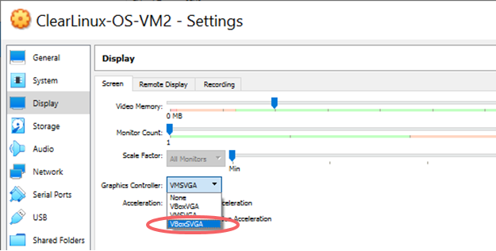

VirtualBox* 上的 Clear Linux* OS¶
本页说明如何利用 Clear Linux* OS 在 VirtualBox 虚拟机管理程序中创建虚拟机，用作来宾操作系统。本说明为 Clear Linux OS live-server 安装程序创建 Clear Linux OS 虚拟机 (VM) 提供支持。
必备条件¶
- 在主机系统上从 EFI/BIOS 启用虚拟化功能，例如 Intel® Virtualization Technology （英特尔® 虚拟化技术）。
- 使用适用于您的平台的 VirtualBox Installation Instructions，从 VirtualBox 下载并安装 VirtualBox 6.0 或更高版本。

创建新的 VirtualBox 虚拟机¶
在即将安装 Clear Linux OS 的 VirtualBox Manager 中需要创建新的 VM。VirtualBox 指南中的 Creating Your First Virtual Machine 章节介绍了创建虚拟机的一般说明和使用不同设置的详细信息。
在主机系统上启动 VirtualBox Manager。
点击 New 按钮创建一个新虚拟机。
选择 Expert mode。
在 Create Virtual Machine 屏幕上，输入以下设置：
名称：选择名称（例如 ClearLinuxOS-VM）。
类型：Linux
版本：Linux 2.6 / 3.x / 4.x（64 位）
硬盘： Create a virtual hard disk now
默认内存大小：2048 MB（进行相应调整。）
注解
以后如果希望更改分配的 RAM 大小，请关闭虚拟机。返回
Settings > System并将 Base Memory 更改为想要的大小。

图 2：创建虚拟机
点击 Create。
在 Create Virtual Hard Disk 屏幕上，选择：
- 文件位置
- 文件大小：32.00 GB。根据需要调整大小。
- 硬盘文件类型： VDI (VirtualBox Disk Image)
- 物理硬盘存储: Dynamically allocated

图 3：创建虚拟硬盘
点击 Create。
新的虚拟机将创建完成并出现在 VirtualBox Manager 中。
点击 Settings 配置 Clear Linux OS 虚拟机。
在左侧菜单中，导航至 菜单。
在 Motherboard 标签上，选择 Chipset 菜单，然后选择 。参见图 4。
注解
您可以为虚拟机选择芯片组。查阅 VM VirtualBox User Manual 了解详情。
在 Enabled Features 中，选中以下方框：
- 启用 I/O APIC
- 启用 EFI（仅适用于特殊操作系统）

图 4: 设置 > 系统
注解
默认情况下，只为新的虚拟机分配 1 个虚拟 CPU。可在“设置”>“系统”>“处理器”中考虑增加分配给虚拟机的虚拟处理器数量，以提高性能。
点击 OK。
在 VirtualBox 虚拟机上安装 Clear Linux OS。¶
Clear Linux OS 现在已准备好安装。
挂载安装 ISO¶
Clear Linux OS 安装程序 ISO 必须在虚拟机上作为虚拟 CD-ROM 挂载，然后才能打开虚拟机。
从左边的 ClearLinux-OS Settings 菜单选择 Storage。
从 Storage Devices 中间栏上，点击标记为 Empty 的蓝色盘。
从 Attributes 菜单点击 Optical Drive 下拉菜单旁边的蓝色 CD 盘，然后点击 Choose Virtual Optical Disk File…

图 5：选择虚拟光盘驱动器
显示 Please choose a virtual optical disk file 后，选择 ISO 文件并点击打开。

图 6：挂载 ISO
点击 OK 退出，返回主 VirtualBox Manager。
利用 live-server 安装程序安装 Clear Linux OS¶
在 VirtualBox Manager 中，选择您创建的虚拟机，点击 Start。
注解
要从虚拟机控制台窗口释放鼠标光标，按下键盘右边的 Ctrl 键。
引导管理器中出现 Clear Linux Installer 时，选择 回车。不要安装 bundle 文件 desktop-autostart。
按照 使用实时服务器将 Clear Linux* OS 安装在裸机上 中的步骤，将 Clear Linux OS 安装在虚拟机的虚拟磁盘上。注：
- 在 Configure Installation Media 中，导航至顶级 VBOX HARDDISK，然后选择 Confirm。
- 在 中，创建一个管理员用户。
- 不要安装 bundle 文件 desktop-autostart。
完成 Clear Linux OS 安装后，点击 Exit。
根据提示输入：
shutdown now
{kind=link}
卸载 ISO¶
需要卸载 Clear Linux OS 安装程序 ISO，以便从虚拟硬盘引导虚拟机。
返回 VirtualBox Manager。
点击 Settings 配置 Clear Linux OS 虚拟机。
从虚拟机 Settings 窗口，导航至左侧菜单的 Storage 窗格。
从 Storage Devices 中间栏上，点击 Controller: IDE 下面标注为 clear-<VERSION>-live-server.iso 的蓝色 CD 盘。
在 Attributes 右边的 Optical Drive 栏中，选择旁边的蓝色 CD 图标，点击 Remove Disk from Virtual Drive。

图 8：从虚拟驱动器中取出磁盘
点击 OK 退出 VM Settings 菜单，返回主 VirtualBox Manager。
安装 VirtualBox Linux Guest Additions¶
Clear Linux OS 利用其 kernel-lts （长期支持）bundle 中的安装脚本为 Linux Guest Additions 驱动程序提供完全的兼容性。
从 VirtualBox Manager 中选择 Clear Linux OS 虚拟机，然后选择 Start。
在虚拟机控制台上，以先前创建的管理员用户身份登录。
注解
随机会显示一条消息：”A kernel update is available: you may wish to reboot the system.”
要更新内核，请输入：
sudo reboot
初次登录时，请输入管理员用户的密码，然后继续。
查看 uname -r 命令的输出结果，验证安装的内核为 kernel-lts。它的结尾应该为 .lts 或 .lts2018。
uname -r <VERSION>.lts
如果运行的内核不是 lts：手动安装 LTS 内核，更新引导启动程序，然后再次检查：
sudo swupd bundle-add kernel-lts clr-boot-manager set-kernel $(basename $(realpath /usr/lib/kernel/default-lts)) clr-boot-manager update reboot
移除任何结尾不是 -lts 或 kernel-install 的内核 bundle，简化和避免冲突：
sudo swupd bundle-list | grep kernel sudo swupd bundle-remove <NON-LTS-KERNEL>在虚拟机控制台顶级菜单中，点击 Devices，然后选择 Insert Guest Additions CD image…，在 Clear Linux OS 虚拟机上挂载 VirtualBox 驱动程序安装。
如果出现对话 “VBx_GAs_6.0.8…Would you like to run it?”，选择 Cancel。
我们提供脚本在 Clear Linux OS 上安装 VirtualBox 驱动程序和修补程序。
打开终端，输入脚本：
sudo install-vbox-lga
注解
成功安装后显示：”Guest Additions installation complete”。如果驱动程序已经安装，不要重复安装。
关闭系统。选择 。

图 10：关闭 VirtualBox 虚拟机
选择 Settings， Display。
在 Graphics Controller 中，选择 VBoxSVGA，以便动态调整屏幕大小。
图 11：VirtualBox 硬件加速错误
在 VirtualBox Manager 中，选择 Start。
在虚拟机控制台上，登录并确认 VirtualBox 驱动程序已加载。
lsmod | grep ^vbox此时，应该会看到以 vbox 开头的驱动程序（例如 vboxvideo、vboxguest）已加载。
添加 desktop-autostart 获得完整的桌面体验。
sudo swupd bundle-add desktop-autostart
重启虚拟机，以管理员用户身份登录。
sudo reboot
{kind=link}
{kind=link}
VirtualBox 上运行的 Clear Linux OS 虚拟机准备就绪，可供开发和探索。
故障检修¶
问题： 在 Microsoft* Windows* 操作系统上，尝试开启虚拟机时 VirtualBox 发生错误，出现消息：系统不支持 VT-X/AMD-v 硬件加速。

图 12：VirtualBox 硬件加速错误
解决方法：首先仔细检查 Prerequisites 部分，确保主机系统的 EFI/BIOS 中启用了经过硬件加速的虚拟化扩展。
启用另一个管理程序（如 Hyper-V）后，VirtualBox 应禁用经过硬件加速的虚拟化。
要禁用 Hyper-V，在管理员：命令提示符或 Powershell 中执行此命令，然后重启系统：
bcdedit /set {current} hypervisorlaunchtype off
要再次启用 Hyper-V，在管理员：命令提示符或 Powershell 中执行此命令，然后重启系统：
bcdedit /set {current} hypervisorlaunchtype Auto